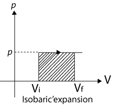
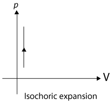
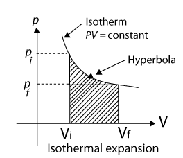
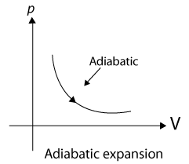

Joule's laws are two laws about heat produced by an electric current and the energy dependence of a gas to pressure, volume and temperature.
Joule's first law shows the relation between heat generated by an electric current flowing through a conductor. It is named after James Prescott Joule and shown as:
\( Q = I^2 . R . t \)
Where Q is the amount of heat, I is the electric current flowing through a conductor, R is the amount of electric resistance present in the conductor, and t is the amount of time that this happens for.
Joule's second law says that the internal energy of an ideal gas does not change if volume and pressure change, but does change if temperature changes.
Joule's law can be stated as : The quantity of Heat (H) generated in a conductor of Resistance(R), when a current is directly proportional to:
The square of the current
The resistance of the conductor
The time for which the current flows.
When a system changes for a given initial state to a given final state, both the work W and heat Q depend on the nature of the process.
Experimentally, however, we find a surprising thing, the quantity Q - W is the same for all processes. It depends only on initial and final states and does not depend at all on how the system gets from one to the other. All other combinations of Q and W, including Q alone, W alone, Q + W and Q - 2W are path dependent, only the quantity Q - W is not.
The quantity Q - W must represent a change in same intrinsic property of the system. This property is the internal energy U and we write
\( \Delta U = U_f - U_i = Q - W ........(i) \)
This equation is the first law of thermodynamics
The first law of thermodynamics tells us that in a thermodynamical process taking place energy will be conserved. However. it does not tell us whether a give process in which energy is conserved will actually take place or not. So, there must be a law of nature other than 1st law of which decides whether a given process, allowed by 1st law will actually take place or not. This law is the second law of thermodynamics. The following are the two forms mentioning about this law.
Using the definition of enthalpy \( (h = u + P_v) \) and writing the differential of enthalpy, the relationship between the specific heats for ideal gases is
\( \begin{align} h = u + P_v \\\\[6pt]
dh = du + d(RT) \\\\[6pt]
C_p dT = C_v dT + R dT \\\\[6pt]
C_p = C_v + R \end{align} \)
where R is the particular gas constant. The specific heat ratio, k, (fluids texts often use g instead of k) is defined as
\( k = \frac{C_p}{C_v} \)
| S.No | Change Or Name Of Process |
Isobaric | Isochoric | Isothermal | Adiabatic |
|---|---|---|---|---|---|
| 1 | Definition | p = constant | V = constant | T = constant |
|
| 2 | dQ |
|
|
dQ = dW | zero |
| 3 | dU |
|
dQ | zero | - dW |
| 4 | dW |
|
zero |
|
|
| 5 | Equation Of State |
\( \frac{V}{T} \) = constant or \( \frac{V_1}{T_1} = \frac{V_2}{T_2} \) |
\( \frac{p}{T} \) = constant or \( \frac{p_1}{T_1} = \frac{p_2}{T_2} \) |
pV = Constant or \( p_1 V_1 = p_2 V_2 \) |
|
| 6 | p - v graph |  |  |  |  |
| 7 | slope of p - V curve | zero | \( \infty \) | \( - \frac{p}{V} \) | \( - \frac{\gamma p}{V} \) |
| 8 | law | Charles law | Gay Lussac's law | Boyle's law | Poisson's law |
| 9 | form of first law | dQ = dU + dW \( = nC_p dT + pdV \) |
\( dQ = dU = nC_V dT \) | dQ = dW = pdV |
|
| 10 | Bulk Modulus | zero | infinity | - p | \( - \gamma p \) |
| 11 | Result of Maximum Work |
Maximum | zero | Less from isobaric process but greater from adiabatic process |
Minimum but not zero |
A heat engine is a device, which transforms heat into mechanical work continuously. Carnot designed a theoretical engine which is free from all defects of practical engine. This engine cannot be realised in practice.
The zeroth law of thermodynamics states that 'two systems in thermal equilibrium with a third system are in thermal equilibrium with each other'. The Zeroth Law leads to the concept of temperature.
Internal energy of a system is the sum of kinetic energies and potential energies of the molecular constituents of the system. It does not include the over-all kinetic energy of the system. Heat and work are two modes of energy transfer to the system. Heat is the energy transfer arising due to temperature difference between the system and the surroundings. Work is energy transfer brought about by other means, such as moving the piston of a cylinder containing the gas, by raising or lowering some weight connected to it.
The first law of thermodynamics is the general law of conservation of energy applied to any system in which energy transfer from or to the surroundings (through heat and work) is taken into account. It states that
\( \triangle{Q} = \triangle{U} + \triangle{W} \)
where \( \triangle{Q} \) is the heat supplied to the system, \( \triangle{W} \) is the work done by the system and \( \triangle{U} \) is the change in internal energy of the system.
The specific heat capacity of a substance is defined by
\( s = \frac{1}{m} \frac{\triangle{Q}}{\triangle{T}} \)
where m is the mass of the substance and \( \triangle{Q} \) is the heat required to change its temperature by \( \triangle{T} \) . The molar specific heat capacity of a substance is defined by
\( C = \frac{1}{m}{\frac{Q}{T}} \)
where \( \mu \) is the number of moles of the substance. For a solid, the law of equipartition of energy gives
C = 3R
which generally agrees with experiment at ordinary temperatures
Calorie is the old unit of heat. 1 calorie is the amount of heat required to raise the temperature of 1 g of water from \( 14.5^{\circ} \ C \ to \ 15.5^{\circ} \ C. \ 1 \ cal = 4.186 \ J \) .
For an ideal gas, the molar specific heat capacities at constant pressure and volume satisfy the relation
\( C_p - C_v = R \)
where R is the universal gas constant.
Equilibrium states of a thermodynamic system are described by state variables. The value of a state variable depends only on the particular state, not on the path used to arrive at that state. Examples of state variables are pressure (P ), volume (V ), temperature (T ), and mass (m ). Heat and work are not state variables. An Equation of State (like the ideal gas equation \( PV = \mu \ RT \) ) is a relation connecting different state variables.
A quasi-static process is an infinitely slow process such that the system remains in thermal and mechanical equilibrium with the surroundings throughout. In a quasi-static process, the pressure and temperature of the environment can differ from those of the system only infinitesimally.
In an isothermal expansion of an ideal gas from volume \( V_1 \) to \( V_2 \) at temperature T the heat absorbed (Q) equals the work done (W) by the gas, each given by
\( Q = W = \mu R T \ In \left ( \frac{V_2}{V_1} \right ) \)
In an adiabatic process of an ideal gas
\( PV^{y} = constant \)
where \( \frac{C_p}{C_v} \)
Work done by an ideal gas in an adiabatic change of state from \( (P_1, \ V_1, \ T_1) \ to \ (P_2, \ V_2, \ T_2) \)
\( W \propto \frac{RT_1 \times T_2}{-1} \)
Heat engine is a device in which a system undergoes a cyclic process resulting in conversion of heat into work. If \( Q_1 \) is the heat absorbed from the source, \( Q_2 \) is the heat released to the sink, and the work output in one cycle is W, the efficiency \( \eta \) of the engine is:
\( \frac{W}{Q_1} = 1 = \frac{Q_2}{Q_1} \)
In a refrigerator or a heat pump, the system extracts heat \( Q_2 \) from the cold reservoir and releases \( Q_1 \) amount of heat to the hot reservoir, with work W done on the system. The co-efficient of performance of a refrigerator is given by
\( \alpha = \frac{Q_2}{W} = \frac{Q_2}{Q_1 - Q_2} \)
The second law of thermodynamics disallows some processes consistent with the First Law of Thermodynamics. It states
Kelvin-Planck statement
No process is possible whose sole result is the absorption of heat from a reservoir and complete conversion of the heat into work.
Clausius statement
No process is possible whose sole result is the transfer of heat from a colder object to a hotter object.
Put simply, the Second Law implies that no heat engine can have efficiency \( \eta \) equal to 1 or no refrigerator can have co-efficient of performance \( \alpha \) equal to infinity.
A process is reversible if it can be reversed such that both the system and the surroundings return to their original states, with no other change anywhere else in the universe. Spontaneous processes of nature are irreversible. The idealised reversible process is a quasi-static process with no dissipative factors such as friction, viscosity, etc.
Carnot engine is a reversible engine operating between two temperatures \( T_1 \) (source) and \( T_2 \) (sink). The Carnot cycle consists of two isothermal processes connected by two adiabatic processes. The efficiency of a Carnot engine is given by
\( \eta = 1 - \frac{T_2}{T_1} \ (Carnot \ engine) \)
No engine operating between two temperatures can have efficiency greater than that of the Carnot engine.
If Q > 0, heat is added to the system
If Q < 0, heat is removed to the system
If W > 0, Work is done by the system
If W < 0, Work is done on the system